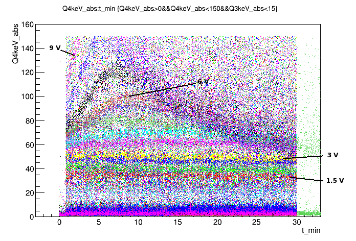
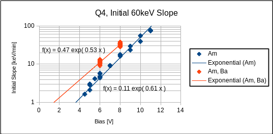
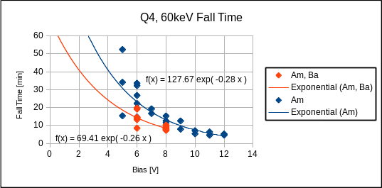
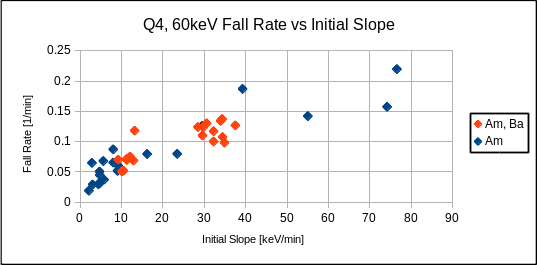
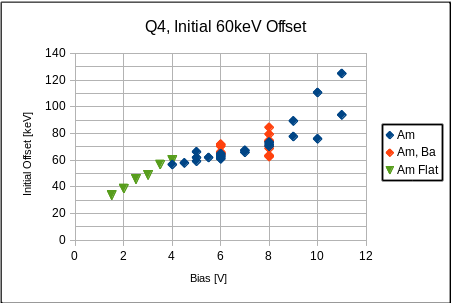

This note presents the results of an analysis of the 60 keV calibration line behavior. This run in particular had a rich set of time dependent behaviors. Our initial attempts to invent a plausible physical model for this behavior have not been successful in reproducing all of the observations. Thus, the analysis presented here attempts to quantify the observed behavior in an empirical way. This will help lend insight into likely physical models.
We observed that, above ~4 V bias, the 60keV calibration peak in Q4 initially rose linearly for a few minutes, then quickly transitioned to an ~exponential fall off over 10s of minutes. This can be seen in Fig. 1 below.
| Figure 1: Q4 60keV peak vs time | |
|---|---|
|  | |
The empirical fit functions then were the following:
The above functions were used to fit the Q4 60keV calibration lines for a set of Run 67 data. The data series used were each after a standard flash and cooldown period. Most of the data was taken with only the internal 241Am sources present. These are the blue points in the figures below. A few additional series were taken with an external 133Ba source placed near the cryostat. These are the orange points below. All fits were performed using only the first 30 min of data after the bias was applied.
| Figure 2: Q4 60keV initial slope vs. bias | |
|---|---|
|  | |
Figure 2 above shows that the initial peak slope grows exponentially with applied bias voltage. With the 133Ba source present, the overall amplitude of the exponential changes, but the slope is similar. i.e. with the source present, the slope at a given bias is higher, but the change in slope with bias is roughly constant.
| Figure 3: Q4 60keV fall time vs. bias | |
|---|---|
|  | |
Figure 3 above shows the distribution of fitted Q4 60keV peak fall times as a function of bias voltage. Again, these fall times seem to be exponentially dependent on bias voltage. The scatter at low biases is due to the difficulty in fitting the exponential function to rather flat tails. The different points at each bias are from measurements of separate series, but generally reflect the uncertainty in fitting even a single such series, not variabilty of the fall times themselves.
| Figure 4: Q4 60keV fall rate vs. initial slope | |
|---|---|
|  | |
Figure 4 shows the distribution of Q4 peak fall rate (1/fall time) versus initial slope. Recall from the above plots that the low slope, low fall rate points are less certain.
| Figure 5: Q4 60keV initial value vs. bias | |
|---|---|
|  | |
Figure 5 above shows the initial 60 keV signal offset as a function of bias. The green points are from low bias data series which did not show the time dependent peak behavior. This is effectively a charge collection efficiency plot for t=0, when the bias is first applied. As can be seen in Fig. 1, there is a smooth transition in these starting values from the low to high bias states. After the onset of significant impact ionization at 4V, the upward trend continues, but at a lower slope. At the highest biases, there is some scatter in the fit values indicative of the fitting uncertainty of the offset due to the large initial slope.
The fit results above do not immediately point to any physical model of the phenomenon. However, they do provide a couple features that any such model should meet. The model should include a linear initial slope which grows exponentially with applied bias and increases with event rate. It should also have an exponential tail with a fall time which decreases exponentially with applied bias voltage.
This analysis can certainly be extended further. Some of the open questions include: What is the dependence of maximum Q4 gain on bias and event rate?; Is there some conserved combination of rise/fall times?; Do the outer channel's calibration lines follow similar trends?; What about bulk events(60keV is near-surface)?
{kind=link}
{kind=link}
{kind=link}
{kind=link}
{kind=link}